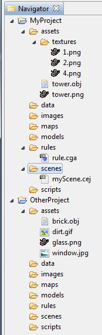

fileSearch / filesSearch functions
searchQuery string Search query to apply on all files in the workspace. See below for details.
Returns an alphabetically sorted list with all files in the workspace matching searchQuery.
fileSearch returns a string list where each entry is terminated with ;. filesSearch returns a string array.
The fileSearch and filesSearch functions list all files in the workspace whose absolute path matches searchQuery. Search queries are relative to the current project, that is, the project in which the current rule file resides, except if searchQuery is based on an absolute workspace path, meaning it starts with / or a wildcard such as * or ?.
Pseudocode of the matching algorithm:
result = ""
for all open projects in workspace :
if project == current project:
result += all matching files in project, relative to assets folder
result += all matching files in project, relative to project folder
fi
result += all matching files in project, relative to workspace root
sort result
end
Search Queries
CityEngine supports advanced search queries with wildcards, regular expressions, and file properties such as file type. All files in the workspace are filtered with the query and the absolute workspace path is returned. Whitespace means AND, so queries with file paths containing a space character need special treatment.
Wildcards
The common wildcard characters * and ? are supported. The asterisk substitutes any series of characters, including none, and the question mark substitutes any single character.
Regular Expressions
Regular expressions allow complex string pattern descriptions. A comprehensive introduction to regular expressions is out of scope here. Refer to other sources such as Wikipedia or the Open Group specification.
Regular expressions start with $. Always put $ as the first character if searchQuery is a regular expression. Note that with regular expressions the semantics of * and ? change. For example, * matches the preceding element zero or more times, therefore use .* to emulate the usual match-anything behavior.
Whitespace Characters
Because whitespace means AND, search queries containing an actual space need to be enclosed in single quotes.
filesSearch("'facade pictures/greek style *.png'")
Alternatively, spaces can be escaped in regular expressions with \s or \x20:
filesSearch("$facade\\spictures/greek\\sstyle\\s.*.png")
File Properties
The following file properties can be queried:
| Name | Filename |
| Ext | File extension |
| Project | Project name |
| Path | File path |
Related
Examples
In the following examples, a basic workspace with two projects and a few files is used. The examples are in rule.cga, so MyProject is the current project.

Wildcards
filesSearch("*.png") |
[/MyProject/assets/textures/1.png, /MyProject/assets/textures/2.png, /MyProject/assets/textures/4.png, /MyProject/assets/tower.png, /OtherProject/assets/glass.png] |
Because the search query starts with an asterisk, all projects are included in the search.
filesSearch("?.png") |
[] |
There is no png file with a 1-character name in the root directory or the asset directory of the current project.
filesSearch("*/?.png") |
[/MyProject/assets/textures/1.png, /MyProject/assets/textures/2.png, /MyProject/assets/textures/4.png] |
Because of the leading asterisk, all folders are searched for a png file with a 1-character name.
filesSearch("textures/*") |
[/MyProject/assets/textures/1.png, /MyProject/assets/textures/2.png, /MyProject/assets/textures/4.png] |
All files in the textures subfolder of the asset folder in the current project match.
Regular Expression to Select Specific Characters
filesSearch("$[12].png") |
[] |
There is no png file with name 1 or 2 in the root directory or the asset directory of the current project.
Regular Expression to Select Specific Characters, Part 2
filesSearch("$textures/[12].png") |
[/MyProject/assets/textures/1.png, /MyProject/assets/textures/2.png] |
All png files with name 1 or 2 in the textures subfolder of the asset folder in the current project match.
Regular Expression Plus Wildcard
filesSearch("$.*/[12].png") |
[/MyProject/assets/textures/1.png, /MyProject/assets/textures/2.png] |
All png files with name 1 or 2 match. Note the period before the asterisk.
Regular Expression to Select a Range of Characters
filesSearch("$textures/[2-5].png") |
[/MyProject/assets/textures/2.png, /MyProject/assets/textures/4.png] |
All png files with name 2, 3, 4, or 5 in the textures subfolder of the asset folder in the current project match.
Regular Expression Plus OR
filesSearch("$textures/[12].png|.*.obj") |
[/MyProject/assets/textures/1.png, /MyProject/assets/textures/2.png, /MyProject/assets/tower.obj, /OtherProject/assets/brick.obj] |
All png files with name 1 or 2 in the textures subfolder of the asset folder in the current project and all obj files in the workspace match.
File Properties
filesSearch("Name=1.png") |
[/MyProject/assets/textures/1.png] |
Only one file matches the name exactly.
File Properties, AND
filesSearch("Project=OtherProject Ext=obj") |
[/OtherProject/assets/brick.obj] |
Using whitespace, two or more queries can be combined. Here, a file must match both the project name and the file extension.